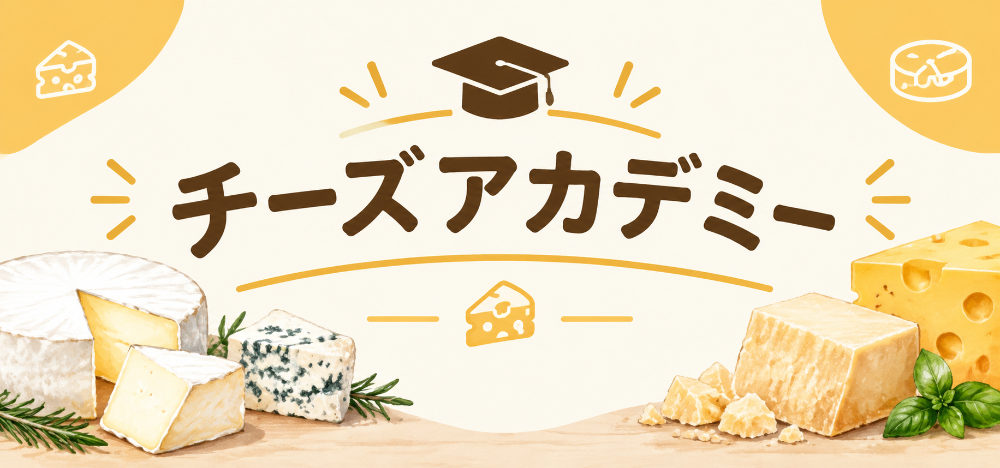
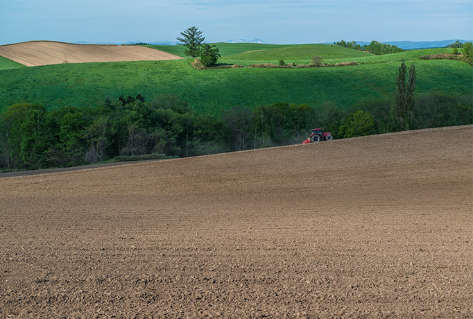

チーズアカデミー



チーズアカデミーは、チーズ職人養成学校です。
チーズの素晴らしさを、自給自足を通じて、できるだけ多くの人に知っていただきたい。
そして、食卓にはいつもチーズがあった、あの頃の当たり前をこの手で取り戻したい。
そんな思いから、チーズ職人養成学校「チーズアカデミーTOKYO」は歩みを始めています。
卒業後、チーズ自給自足のバックアップはもちろんのこと、チーズ職人への就職・転職もサポートします。
| レビュー | 圧倒的に好評 |
|---|---|
| リリース日 | 2015/4/1 |
| 運営 | G's |
Course
未経験からでもスタートができるよう、カリキュラムは多くの専門家や
現役チーズ職人のアドバイスのもと、作られました。
本格的な農園を使った実地研修
チーズアカデミーでは、本格的な農園を使った実地研修を行うことができます。 プロとして活躍するチーズ職人も使用するような、広大な農場も兼ね備えた農園を使うことにより、 ただ学ぶだけでなく、実際にチーズを自分の力で作る実践力の形成を目指します。

必要な知識もしっかりと取得
チーズ作りには、しっかりとした知識も必要です。 チーズアカデミーでは、一流講師による、チーズ作りに必要な知識を身につけることができます。 チーズそのものだけでなく、栄養学や食品学なども学ぶことで、チーズのプロへの第一歩を踏み出しましょう。

卒業制作はティスティング審査あり
チーズアカデミーでは最後の2か月間で卒業制作を実施。 卒業制作として、チーズ作りを実践していただきます。 卒業制作によるチーズのテイスティング審査があるため、作り手の目線だけでなく、 食べる側の目線も意識しながら、卒業制作を完成させていきます。

Access
会社情報
| 学校名 | チーズアカデミーTOKYO |
|---|---|
| 事務所 | 〒107-0061 東京都港区北青山3-5-6 青朋ビル2F |
| TEL | 03-5413-5045 |
| FAX | 03-5413-5046 |
| dummy@cheeseacademy.tokyo |

CONTACT
説明会お申し込み・お問い合わせ
ぜひ1度、足を運んでみませんか。説明会は随時開催中。
その他、お問い合わせもお気軽にどうぞ。お待ちしております。
※チーズアカデミーは架空の学校です。
実在しませんので、実際にお問い合わせしないようお願いいたします。